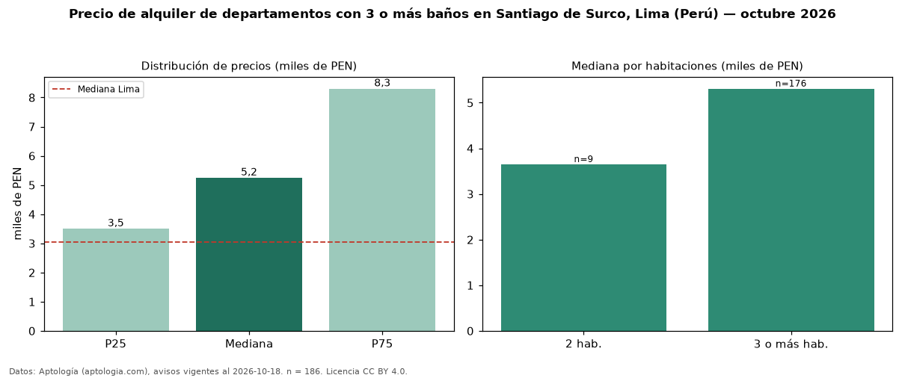

Precio de alquiler de departamentos con 3 o más baños en Santiago de Surco, Lima (Perú) — octubre 2026
Con 186 avisos vigentes, el canon mediano de departamentos con 3 o más baños en alquiler en Santiago de Surco, Lima (Perú) es PEN 5.245 al mes. Eso es 50 % más que la mediana de todos los departamentos en alquiler de Santiago de Surco (PEN 3.500, n = 408); este segmento reúne el 46 % de esos avisos. Por metro cuadrado, la mediana es PEN 25,24/m² al mes (n = 184), 7 % por debajo del conjunto de referencia (PEN 27,00/m²). El área mediana anunciada es 220 m². El segmento con más oferta es el de 3 o más habitaciones (176 avisos, mediana PEN 5.306); pasar de 2 habitaciones a 3 o más habitaciones cambia la mediana +45 %. La mitad central de los avisos va de PEN 3.500 a PEN 8.300 (razón 2,4), una dispersión alta. La cuota de mantenimiento o condominio mediana declarada es PEN 475 al mes (n = 30), aparte del canon. La mediana de todos los departamentos en alquiler de Lima es PEN 3.050 (+72 % de diferencia). Datos: Aptología (aptologia.com), CC BY 4.0 — https://www.aptologia.com/pe/alquiler/lima/santiago-de-surco. Archivos: PDF, CSV con las cifras y gráfica PNG.

| Avisos únicos | 186 |
|---|---|
| Percentil 25 | COP 3.500 |
| Mediana | COP 5.245 |
| Percentil 75 | COP 8.300 |
| Mediana por m² | COP 25 |
Fuente: avisos vigentes de portales inmobiliarios recopilados por Aptología, deduplicados (mínimo 30 avisos únicos por celda). Precios pedidos, no cerrados. Fecha: 2026-10-18.